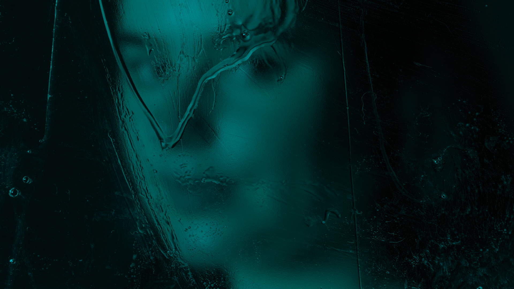

beyond
what is behind all the masks, facades, filters and barriers? how high are the walls around our souls? how could they be built? behind manual filters is a person, out of focus, blurred and behind grids. outlines, shadows and hunches are there, but the story remains hidden. instead, the face tells about silence, hiding and being caught invisible.
created in the class »studiotechnik« taught by rüdiger dunker